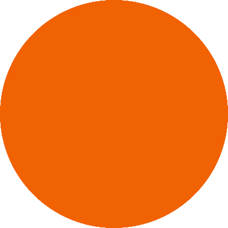

d(ex )/dx
Hi,
I’m a Software Engineer from Hyderabad.
I have an MTech in Data Science and Engineering (AI focus) from Birla Institute
of Technology and Science, Pilani.
I am currently working on compiler design for AI on the edge devices / TPUs,
I love math, deep learning and optimization.
Motive
What's right from wrong? What's good from evil? Nobody can truly distinguish between them. Even
if there
was god, we would decide for ourselves whether their teachings are right or wrong. We put our faith in
our convictions as to what we believe is right, and consider them to be righteous.
I am Justice.
何が正しいか間違っているか?悪から善は何ですか?誰もそれらを本当に区別することはできません。
たとえ神がいたとしても、私たちは彼らの教えが正しいか間違っているかを自分で決めるでしょう。わたしたちは自分が正しいと信じるものについての信念を信じ,それを義人であると考えます。
私は正義です。
Email /
GitHub /
Instagram
|

|
|
|
Kinara AI
Hyderabad
Jul, 2020 - Present
Developed a compiler framework for AI / Deep Learning accelerators. It aims to enable machine learning engineers to optimize and run computations efficiently on Kinara’s ARA1, ARA2 backends. Exploring multiple opensource frameworks including TVM, MLIR, ONNX runtime.
References:
Apache TVM
MLIR: Multi-Level Intermediate Representation
ONNX Runtime
Developed optimised kernels for quantised Deep Learning operators like: Convolution, Deconvolution, Inner Product, etc to enable networks like, MobileNet, ResNet, LSTMs, Transformer networks and Yolo variants.
Designed an optimised quantization scheme for ROI Align which uses Bilinear Interpolation for MaskRCNN, DensePose
References:
MaskRCNN
DensePose
Designed approximations for GELU: Gaussian Error Linear Units, Mish: A Self Regularized Non-Monotonic Activation Function, using techniques from Applied Numerical Methods.
These approximations provide an accurate starting approximation for high-precision iterative algorithms, which translates into few iterations and a short overall latency.
References:
GELU: Gaussian Error Linear Units
Mish: A Self Regularized Non-Monotonic Activation Function
|
|
|
Wipro
Bengaluru
jun, 2019 - Jul, 2020
Designed a Data flow to migrate data into HDFS, Hadoop architecture using Big data technologies like Hive and Hbase. And using Talend Big Data ETL tool we have analysed the data and reported the user required data to increase performance. This was automised and scheduled based on client requirements.
We have also used Python to automate DDL creation for Ingestion jobs to increase productivity.
Big Data and ML Developer
Jul, 2019 - Jul, 2020
Trainee
Jun, 2019 - Jul, 2019
|
|
|
Centre for Social Entrepreneurship and Development
Vellore
jul, 2015 - Feb, 2018
CSED(Centre for Social Entrepreneurship and Development) is an organisation originating from VIT, Vellore. It is a platform for budding entrepreneurs to scale up their startup from ideation stage. We help the young generation of entrepreneurs understand the ins and outs of the startup world.
In addition to this, we hold various events and workshops in schools and colleges to help students ideate in an early stage. An important part of our work is to connect entrepreneurs to investors and interns through our growing network, providing them the required opportunities to grow.
Vice President of Technology and Design (Founding Team - CSED)
Aug, 2017 - Feb, 2018
Head of Technology and Design
Aug, 2016 - Jul, 2017
Core Committee Member
Jul, 2015 - Jul, 2016
|
|
|
Hyundai Motor India Ltd.
Chennai
Jul, 2017 to Aug, 2017
|
|